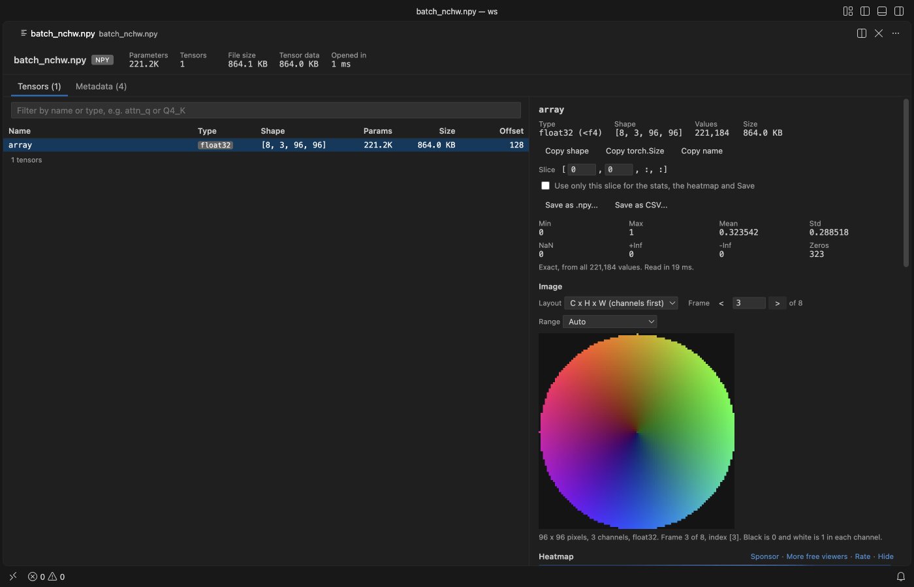

Open files in VS Code and Cursor / Machine learning files
Save a PyTorch tensor or one 2-D slice as a CSV file
To get one tensor into a spreadsheet you usually load the checkpoint in Python and write the CSV yourself. Tensor Viewer opens .pt, .pth, .ckpt, safetensors, GGUF, .npy and .npz files in VS Code without running them. Pick a tensor, type a slice such as [5, :, :] if you want only one part, and click "Save as CSV...". Each row of the tensor becomes one line, with every digit kept. Zovo Pro (USD 19 once) adds a compare of two checkpoints and a scan of all tensors for NaN, Inf and zeros, with 3 free tries each.
Free, MIT license. Extension ID zovo.tensor-viewer, version 0.6.6. Needs VS Code 1.90.0 or newer.

Steps in VS Code
- Install Tensor Viewer from the Marketplace, or press Ctrl+P (Cmd+P on macOS) and run
ext install zovo.tensor-viewer. - Click the
.pt,.pthor.ckptfile in the Explorer. Only the header is read at first, so big checkpoints open fast. Safetensors, GGUF,.npyand.npzfiles open the same way. - Find the tensor in the table. Type part of its name, such as
fc.weight, in the filter box, and click it. - For a tensor with 3 or more dimensions, type the slice you want in the Slice field, for example
[5, :, :]for the sixth item of a batch. The Values table shows that slice. - Tick "Use only this slice for the stats, the heatmap and Save". Leave it off to save the whole tensor.
- Click "Save as CSV..." and pick where to save. The file is written in chunks with a progress bar you can cancel.
Where Zovo Pro saves time
Opening every supported format, the tensor table, stats, heatmaps, slices, the Values table, "Copy values" and Save as .npy or CSV are free. For a few numbers, "Copy values" puts the current page of the Values table on the clipboard as tab-separated text that pastes into a spreadsheet. The pickle inside PyTorch files is read as data and never run.
People often export tensors to CSV to compare two training steps or a model before and after conversion in a spreadsheet. Compare Two Checkpoints does that for every tensor of two files at once. It reads every value and gives the max and mean absolute difference, RMSE, relative L2 error, cosine similarity, how many values differ and where the largest change is, and it lists tensors that exist in one file only or changed shape. It works across formats, such as .safetensors against .pt. The other Pro tool scans all tensors for NaN, Inf and zeros.
With Compare Two Checkpoints (Zovo Pro)
- Select the two files in the Explorer, right-click and pick "Zovo Pro: Compare Two Checkpoints", or click "Compare with..." at the top of the viewer and pick the second file.
- Tick "Only tensors that differ" to hide the identical ones.
- Save the report as CSV, Markdown or JSON.
Compare Two Checkpoints works 3 times on your computer before it asks for a license, and a try counts only when you get a result. Opening a file shows no popup and no countdown.
Zovo Pro costs USD 19 once. It is not a subscription, and it turns on the Pro tools in every Zovo extension, not only Tensor Viewer. After a card payment (Stripe) your license key shows on the next page. In VS Code, run "Zovo Pro: Enter Zovo Pro license key" from the Command Palette and paste it. The key is checked on your computer, with no network call. With GitHub Sponsors, pick the "$19 one time" tier, then run "Zovo Pro: I already paid: unlock with GitHub Sponsors" and sign in with the same GitHub account. With PayPal, send USD 19 with "Zovo Pro" in the note and the key comes by email within a day.
A team of 5: USD 59 once, by card or by PayPal. Every rule and every Pro tool is on the Zovo Pro page.
Steps in Cursor, Windsurf or VSCodium
- Open the Extensions view with Ctrl+Shift+X (Cmd+Shift+X on macOS).
- Search for
zovo.tensor-viewerand click Install. Cursor, Windsurf and VSCodium install from Open VSX, where it is published aszovo/tensor-viewer. - If your editor has no gallery, download the .vsix from the Open VSX page and run "Extensions: Install from VSIX...".
- Then use it the same way as in VS Code.
What Tensor Viewer handles
- PyTorch
.pt,.pth,.ckptandpytorch_model*.binfiles, including Lightning checkpoints and TorchScript files. - Safetensors, GGUF,
.npyand.npzfiles. - bfloat16, float16 and FP8 tensors, and GGUF quant types after dequantizing.
- Tensors of 3 or more dimensions, written as rows of their last dimension.
What it does not do
- CSV export stops at 20 million values. Use "Save as .npy..." for bigger tensors.
- 64-bit integers above 2^53 lose their last digits in CSV. The .npy export copies them exactly.
- Sparse, nested and meta tensors are listed with their shape but not decoded, so they cannot be saved.
- Compressed
.npzentries over 512 MB cannot be saved.
Other options
- NumPy savetxt. In Python,
np.savetxt("out.csv", t.numpy(), delimiter=",")writes a 1-D or 2-D tensor. Needs PyTorch to load the checkpoint first. - pandas.
pandas.DataFrame(t.numpy()).to_csv("out.csv")writes a 2-D tensor with row and column numbers. Also needs Python and PyTorch.
Install counts and Open VSX status were checked on 13 November 2026. Descriptions in quotes are the extensions' own.
Questions
Does it run torch.load?
No. The pickle inside the checkpoint is decoded as data and never run, so a file you downloaded cannot run code.
How is a 3-D tensor written to CSV?
As rows of its last dimension. A tensor of shape (8, 96, 96) gives 768 lines of 96 values. Use the slice option to write one 96 x 96 part instead.
Can I save as .npy instead?
Yes. "Save as .npy..." writes a file that np.load reads, with no size limit like the CSV one.
Does it work in Cursor or Windsurf?
Yes. Cursor, Windsurf and VSCodium install extensions from Open VSX. Search for the extension in their Extensions view and install it there.
More about Tensor Viewer
Read the Tensor Viewer page for every feature and setting, or the source code on GitHub.
Related guides
- NPZ & NPY Viewer, PyTorch & Safetensors on the VS Code Marketplace (also on Open VSX). Shows arrays, shapes and values from .npy, .npz, .pth, GGUF and safetensors files.
- View .npy and .npz NumPy files in VS Code
- A safetensors viewer for VS Code
- Open a .npz file in VS Code
- Compare two PyTorch checkpoints
Zovo Pro and support
Zovo Pro: USD 19 once, every Zovo viewer. It turns on the Pro tools in this extension and in the other Zovo extensions you use. The free features stay free.
After a card payment your license key shows on the next page. Paste it with the command "Zovo Pro: Enter a key".
You can also support the work with no Pro:
Need your format supported?
Open a format request with a sample file, and I reply there whether it can be done. For USD 299 once, through this GitHub Sponsors tier, I add your file format or a missing feature to this extension, with tests, within 7 days.